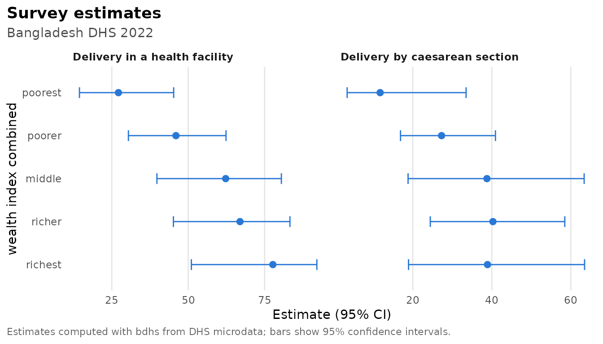

DHS indicators look simple (“percentage of births delivered in a health facility”) but each one hides decisions. Which births count, from which time window, with which weight, and how should ever-married samples or missing codes be handled? bdhs encodes these decisions once, following the DHS Program’s definitions. Each indicator was then checked against the official estimates using real BDHS files.
The examples below use synthetic data from
bdhs_simulate(), so the numbers are random. With your own
data from bdhs_read() they reproduce the BDHS reports.
The indicator library
ind <- bdhs_indicator_list()
nrow(ind)
#> [1] 97
table(ind$topic)
#>
#> biomarkers child_health education_media empowerment family_planning
#> 2 16 7 6 18
#> fertility household marriage maternal_health mortality
#> 7 7 4 10 5
#> nutrition
#> 15
ind[ind$topic == "maternal_health", c("id", "label", "recode", "api_id")]
#> # A tibble: 10 × 4
#> id label recode api_id
#> <chr> <chr> <chr> <chr>
#> 1 rh_anc_skilled Antenatal care from a skilled provider KR RH_AN…
#> 2 rh_anc_doctor Antenatal care from a doctor KR RH_AN…
#> 3 rh_anc_4plus Four or more antenatal care visits KR RH_AN…
#> 4 rh_anc_first_trimester First antenatal visit before the fourth… KR RH_AN…
#> 5 rh_del_facility Delivery in a health facility KR RH_DE…
#> 6 rh_del_home Delivery at home KR RH_DE…
#> 7 rh_del_skilled Delivery assisted by a skilled provider KR RH_DE…
#> 8 rh_del_doctor Delivery assisted by a doctor KR RH_DE…
#> 9 rh_del_csection Delivery by caesarean section KR RH_DE…
#> 10 rh_pnc_mother_2days Postnatal check of the mother within tw… KR RH_PC…Every indicator has an id, the recode it is computed
from, and the DHS Program API id of the matching official estimate
(api_id), which is also in the bundled
bdhs_indicators. The definition and
notes columns say exactly what is computed:
x <- ind[ind$id == "rh_del_skilled", ]
writeLines(strwrap(c(x$definition, "", x$notes), width = 76))
#> Percentage of live births in the 3 years before the survey assisted by a
#> medically trained provider (SDG 3.1.2).
#>
#> Bangladesh definition of medically trained provider; the m3* letters differ
#> by round (doctor and nurse/midwife only up to 2004).Estimating
bdhs_estimate() takes a recode data frame and indicator
ids. It builds the survey design (bdhs_design()) and
returns estimates with standard errors, confidence intervals and
denominators:
kr <- bdhs_simulate(2022, "KR")
bdhs_estimate(kr, c("rh_anc_4plus", "rh_del_facility", "rh_del_csection"))
#> # BDHS estimates: 3 indicators | BD2022DHS | 95% CI
#> # A tibble: 3 × 10
#> survey_id indicator label estimate se ci_low ci_high n_unweighted
#> <chr> <chr> <chr> <dbl> <dbl> <dbl> <dbl> <int>
#> 1 BD2022DHS rh_anc_4plus Four or … 32.7 2.88 27.1 38.9 145
#> 2 BD2022DHS rh_del_facility Delivery… 54.1 4.07 45.6 62.3 162
#> 3 BD2022DHS rh_del_csection Delivery… 30.4 3.73 23.3 38.6 162
#> # ℹ 2 more variables: n_weighted <dbl>, api_id <chr>Add by for subgroups. Labelled variables are shown with
their labels:
est <- bdhs_estimate(kr, c("rh_del_facility", "rh_del_csection"), by = "v190")
est
#> # BDHS estimates: 2 indicators | BD2022DHS | 95% CI
#> # A tibble: 10 × 11
#> survey_id indicator label v190 estimate se ci_low ci_high n_unweighted
#> <chr> <chr> <chr> <fct> <dbl> <dbl> <dbl> <dbl> <int>
#> 1 BD2022DHS rh_del_faci… Deli… poor… 27.2 7.62 14.4 45.2 36
#> 2 BD2022DHS rh_del_faci… Deli… poor… 46.0 8.01 30.4 62.4 40
#> 3 BD2022DHS rh_del_faci… Deli… midd… 62.3 10.4 39.8 80.5 22
#> 4 BD2022DHS rh_del_faci… Deli… rich… 66.9 9.65 45.2 83.3 38
#> 5 BD2022DHS rh_del_faci… Deli… rich… 77.7 10.1 51.0 92.1 26
#> 6 BD2022DHS rh_del_csec… Deli… poor… 11.7 6.68 3.40 33.5 36
#> 7 BD2022DHS rh_del_csec… Deli… poor… 27.3 5.89 16.9 40.9 40
#> 8 BD2022DHS rh_del_csec… Deli… midd… 38.8 11.6 18.8 63.4 22
#> 9 BD2022DHS rh_del_csec… Deli… rich… 40.3 8.57 24.4 58.5 38
#> 10 BD2022DHS rh_del_csec… Deli… rich… 38.9 11.6 18.9 63.5 26
#> # ℹ 2 more variables: n_weighted <dbl>, api_id <chr>
plot(est)
A few details are handled for you:
-
Percentages are on the 0-100 scale, as in DHS
reports (
scale). Confidence intervals are computed on the logit scale, so they stay between 0 and 100 (ci_method = "wald"gives symmetric intervals). -
All-women indicators. BDHS interviews only
ever-married women, so indicators about all women, such as child
marriage or teenage childbearing, use the DHS all-woman factors through
a ratio estimator. The factor that matches a single
byvariable is used (awfactufor residence,awfactrfor division, and so on). - Medians (age at first marriage) use the DHS interpolation and jackknife standard errors.
- Round differences. Some definitions change between rounds, for example who counts as a skilled provider, the 2022 short questionnaire, or solar electricity in 2022. These are built into each indicator. An indicator that a round did not collect is skipped with a warning.
ir <- bdhs_simulate(2022, "IR")
bdhs_estimate(ir, c("fp_cpr_modern", "fp_unmet_total", "ms_married_by_18", "ms_median_afm_20_49"))
#> # BDHS estimates: 4 indicators | BD2022DHS | 95% CI
#> # A tibble: 4 × 10
#> survey_id indicator label estimate se ci_low ci_high n_unweighted
#> <chr> <chr> <chr> <dbl> <dbl> <dbl> <dbl> <int>
#> 1 BD2022DHS fp_cpr_modern Cont… 55.0 2.12 50.6 59.3 515
#> 2 BD2022DHS fp_unmet_total Unme… 5.06 1.01 3.34 7.60 515
#> 3 BD2022DHS ms_married_by_18 Wome… 46.5 3.72 39.0 54.2 85
#> 4 BD2022DHS ms_median_afm_20_49 Medi… 17.2 0.154 16.9 17.5 477
#> # ℹ 2 more variables: n_weighted <dbl>, api_id <chr>Pooled rounds
Pooled data (see vignette("survey-design")) are
estimated round by round:
pooled <- bdhs_pool(bdhs_simulate(2014, "KR", seed = 1), bdhs_simulate(2022, "KR", seed = 2))
#> ℹ Value labels differ between rounds for 3 columns; kept the codes and dropped
#> the labels: `v022`, `v023`, and `v024`.
#> ℹ DHS codes are not always comparable across rounds; use `harmonize = TRUE` or
#> `bdhs_harmonize()` for comparable variables.
bdhs_estimate(pooled, "rh_del_csection")
#> # BDHS estimates: 1 indicator | BD2014DHS, BD2022DHS | 95% CI
#> # A tibble: 2 × 10
#> survey_id indicator label estimate se ci_low ci_high n_unweighted
#> <chr> <chr> <chr> <dbl> <dbl> <dbl> <dbl> <int>
#> 1 BD2014DHS rh_del_csection Delivery… 33.7 3.82 26.4 42.0 161
#> 2 BD2022DHS rh_del_csection Delivery… 29.2 3.88 21.8 37.8 166
#> # ℹ 2 more variables: n_weighted <dbl>, api_id <chr>Indicators as variables for modelling
bdhs_add_indicators() adds indicator columns to your
data. They are 0/1 inside the denominator and NA outside
it, so they are ready for regression:
kr2 <- bdhs_add_indicators(kr, "rh_del_csection")
des <- bdhs_design(kr2)
fit <- survey::svyglm(rh_del_csection ~ factor(v025) + factor(v106), design = des, family = quasibinomial())
round(coef(summary(fit)), 3)
#> Estimate Std. Error t value Pr(>|t|)
#> (Intercept) -1.479 0.487 -3.038 0.006
#> factor(v025)2 0.140 0.383 0.367 0.718
#> factor(v106)1 0.408 0.523 0.781 0.444
#> factor(v106)2 1.034 0.620 1.668 0.111
#> factor(v106)3 0.594 0.583 1.020 0.320Fertility and mortality rates
Rates need the DHS synthetic-cohort methods. These are implemented natively, with jackknife standard errors, and checked against the DHS.rates package and the official values.
bdhs_fertility(ir) # TFR, last 3 years
#> # A tibble: 1 × 12
#> survey_id indicator age_group estimate se ci_low ci_high n_births exposure
#> <chr> <chr> <chr> <dbl> <dbl> <dbl> <dbl> <dbl> <dbl>
#> 1 BD2022DHS tfr 15-49 2.80 0.172 2.47 3.14 169 1931.
#> # ℹ 3 more variables: n_women <int>, n_psu <int>, period <int>
bdhs_fertility(ir, type = "asfr")[, c("age_group", "estimate", "se")]
#> # A tibble: 7 × 3
#> age_group estimate se
#> <chr> <dbl> <dbl>
#> 1 15-19 96.4 12.9
#> 2 20-24 214. 16.6
#> 3 25-29 128. 17.7
#> 4 30-34 74.0 16.1
#> 5 35-39 23.9 11.6
#> 6 40-44 19.1 10.8
#> 7 45-49 5.51 5.55The births recode (or the birth history in the women’s recode) gives childhood mortality for the five years before the survey:
br <- bdhs_simulate(2022, "BR")
bdhs_mortality(br)[, c("indicator", "estimate", "se", "ci_low", "ci_high")]
#> # A tibble: 5 × 5
#> indicator estimate se ci_low ci_high
#> <chr> <dbl> <dbl> <dbl> <dbl>
#> 1 nnmr 22.1 8.72 4.98 39.2
#> 2 pnnmr 51.6 14.3 23.6 79.6
#> 3 imr 73.6 18.0 38.3 109.
#> 4 cmr 11.9 6.59 0 24.8
#> 5 u5mr 84.7 18.0 49.5 120.Both functions accept by for subgroups and a
period argument (in months for fertility, in years for
mortality).
Validation: does it reproduce the BDHS reports?
bdhs_validate() computes every indicator it can from
your data and compares it with the official value bundled in
bdhs_indicators:
kr <- bdhs_read(2017, "KR")
bdhs_validate(kr)Use it as a first check on your copy of the data. Simulated data are random, so they are not expected to pass.
The package itself was validated this way using real files from every
round the maintainer had (KR for all rounds except 1996-97, and IR, PR
and BR for 2017-18 and 2022). bdhs_validation_record()
holds the results, which are national aggregates only:
rec <- bdhs_validation_record()
summary_tab <- aggregate(pass ~ survey_id, rec, function(x) sprintf("%d / %d", sum(x), length(x)))
names(summary_tab)[2] <- "passed"
summary_tab
#> survey_id passed
#> 1 BD1994DHS 24 / 24
#> 2 BD2000DHS 27 / 27
#> 3 BD2004DHS 26 / 26
#> 4 BD2007DHS 27 / 28
#> 5 BD2011DHS 27 / 27
#> 6 BD2014DHS 28 / 28
#> 7 BD2017DHS 104 / 104
#> 8 BD2022DHS 89 / 91The three comparisons that fail are known and documented:
rec[!rec$pass, ]
#> # A tibble: 3 × 6
#> survey_id recode indicator computed official pass
#> <chr> <chr> <chr> <dbl> <dbl> <lgl>
#> 1 BD2007DHS KR nt_ebf 42.9 49.8 FALSE
#> 2 BD2022DHS IR nt_wm_overweight_obese 36.5 35.6 FALSE
#> 3 BD2022DHS IR nt_wm_thin 10.0 10.7 FALSE- Women’s anthropometry in 2022 must come from the household member
file (PR). It covers all women in the biomarker subsample, while the
women’s file covers ever-married women only. Use
bdhs_estimate(pr, "nt_wm_thin"). - Exclusive breastfeeding in 2007 is 42.9% against the official 49.8%. The cause is still under investigation.
Things the validation taught us
-
2022 short questionnaire. About a third of the 2022
women (10,091 of 30,078) answered a short questionnaire
(
sqtype == 2) without family planning, marriage and empowerment questions. Counting them as “no” understates unmet need (6.7% instead of 10.0%) and child marriage (33.9% instead of 50.7%). bdhs restricts these indicators to the long questionnaire, as the DHS Program does. - No vaccination data in the 2022 children’s file. The vaccination variables of the 2022 KR are empty, and there are no official 2022 vaccination estimates, so these indicators are unavailable for 2022.
-
Solar electricity. The 2022 electricity indicator
includes solar home systems (
sh132g), as in the final report (99.4%).
The validated column of
bdhs_indicator_list() lists, for each indicator, the rounds
in which it reproduced the official value. Indicators without an
official value have an empty list there: solid cooking fuel and the
2011/2017-18 biomarker indicators (hypertension and diabetes). Use them
with care.
Comparing with the official numbers
The official values are always one call away:
bdhs_official("RH_DELA_C_CSC")[, c("year_label", "value", "ci_low", "ci_high")]
#> # A tibble: 7 × 4
#> year_label value ci_low ci_high
#> <chr> <dbl> <dbl> <dbl>
#> 1 1999-2000 3 NA NA
#> 2 2004 4.9 NA NA
#> 3 2007 9.9 NA NA
#> 4 2011 18.2 NA NA
#> 5 2014 24.3 NA NA
#> 6 2017-18 33.9 NA NA
#> 7 2022 44.5 NA NAYour microdata estimates and the official values share the same
indicator/api_id link, so it is easy to put
them side by side, or to map your own estimates with
bdhs_map().